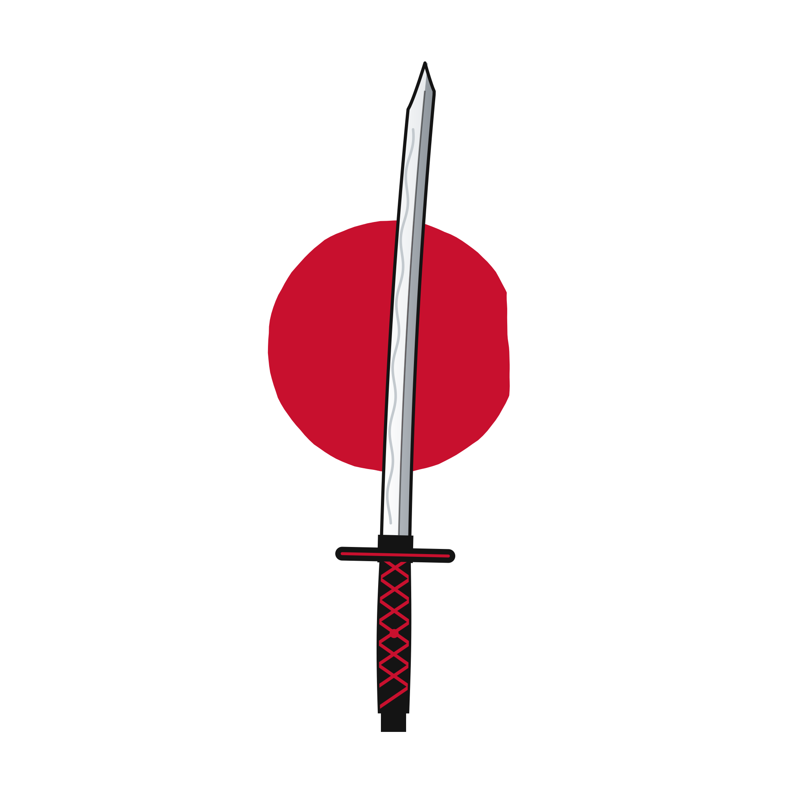

AI Resume Analyzer職歴書解析
AI Engineering · Jan 2025
Next.js · TypeScript · Gemini · Groq · Zod
95% parsing accuracy across 100+ resumes with multi-model fallback.
Live Site ↗

I am a Full Stack Developer specializing in scalable backend systems, secure data layers, and highly responsive user interfaces. My expertise bridges high-performance cloud hosting with intelligent LLM integrations to deliver end-to-end applications.
Production-grade web platforms, scalable backend systems, and AI-powered applications built with modern engineering practices.
A comprehensive index of core languages, full-stack frameworks, production databases, and architectural fundamentals powering my applications. Select any skill to inspect implementation details, real project usage, and codebase metrics.
Rigorous credentials spanning cloud architecture, operating systems, enterprise database foundations, and predictive analytics. Formally validated by AWS, Google, Oracle, Deloitte, and NPTEL.